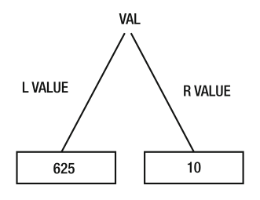

Variables
A variable is a name given to an address in memory that holds a value.
Define a variable
var val int64 = 10
A variable is defined with the word var followed by a name and type. val and int are the name and type chosen, for this example. The type tells
the compiler how much memory to ask the Operating System to reserve.
The variable val is made by to important values: lvalue and rvalue.

The val variable starts in memory at 625 and because it's an int will occupy 8 bytes on a 64-bit machine. So, the variable starts in memory at 625 and ends at 633.
The 10 represent the value that it stores at the 8 byte (int64) address and in a 64-bit machine is saved in this format:
0000 0000 0000 0000
0000 0000 0000 0000
0000 0000 0000 0000
0000 0000 0000 1010
lvalue and rvalue
lvalue: called left value or location value is the starting memory address at which a variable is stored. For example, an int is stored from memory address625.rvalue: is what is stored at thelvalue. In Go you can assume that thervaluewill have the default value of the type, which for int is0. In our example we assigned10for thervaluebut we can also define a variable without assigning a value.// val rvalue is 0 var val int64
define vs declare
define: variable exists in the symbolic table (compiler table of each variable of our program) and has alvaluedeclare: variable exists in the symbolic table but has nolvalue. Thelvaluerepresent the random bits that exist at the given time in the memory address at which the variable points.
In Go every variable is initialized with the default value of the type and there isn't the risk of a variable that is only declared and points to random bits in memory.
Multiple ways to define a variaable.
package main
func main() {
var age int // define without initialization
var age2 int = 42 // define with initialization
var age3, age4 int = 42, 1302 // define/init multiple vars at once
var age5 = 42 // type omitted, will be inferred
age6 := 42 // shorthand, only in func bodies, implicit type
const name = "Gopher" // value cannot be changed
}
intstorage capacity depends on what machine you have. On a 64-bit machineintstorage is 64 bits and on a 32-bit machineintstorage is 32 bits. There are alsoint64andint32but usuallyintis the type used more.
const vs var
The difference between constants and variables is that the variables value can be changed while constants value is defined once and cannot be changed after that.